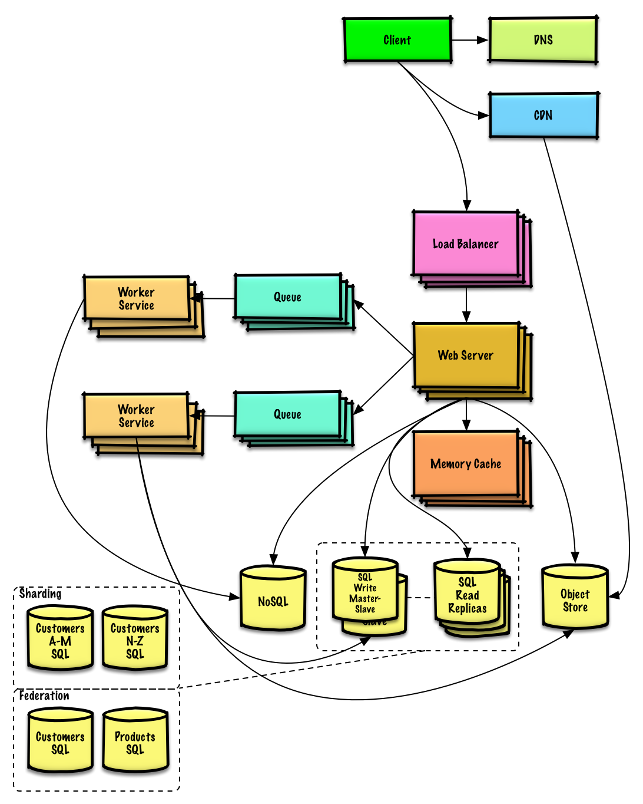
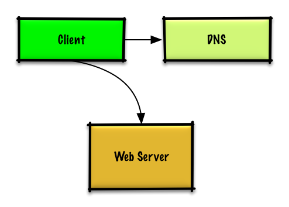
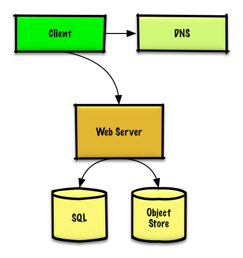
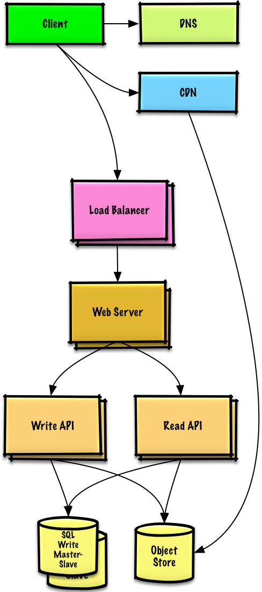
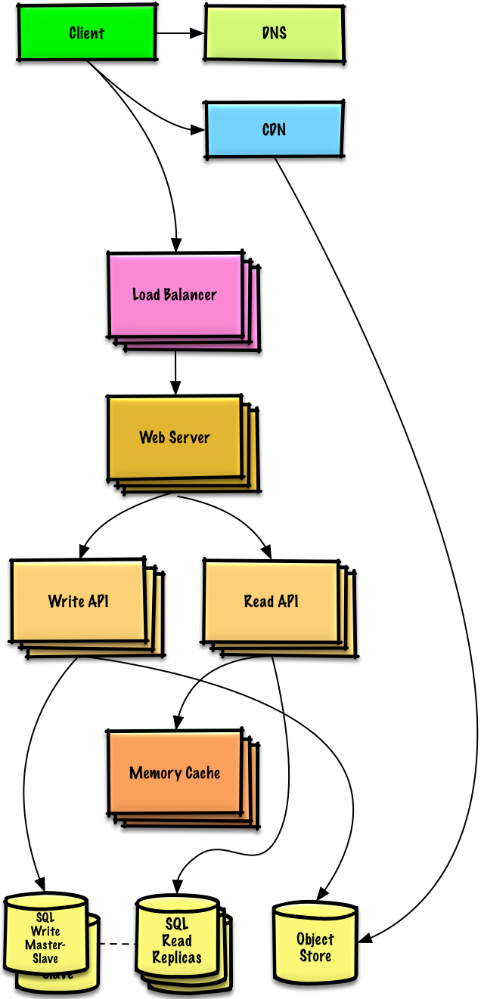
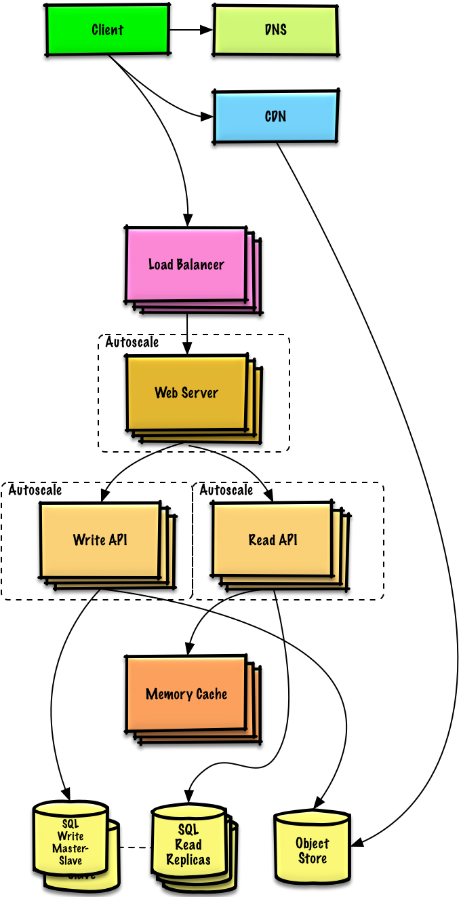
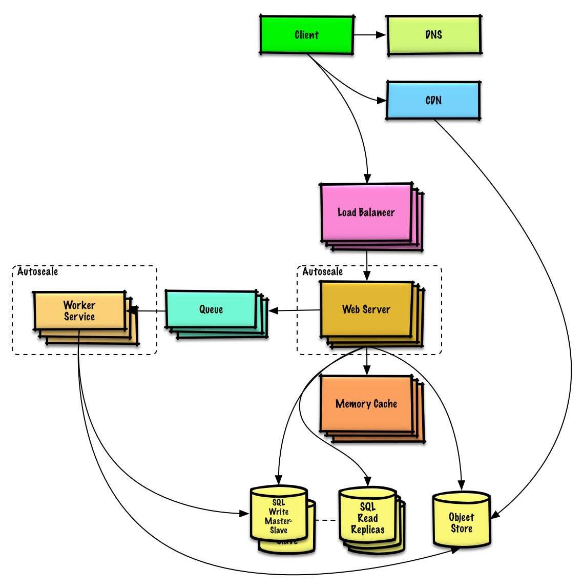
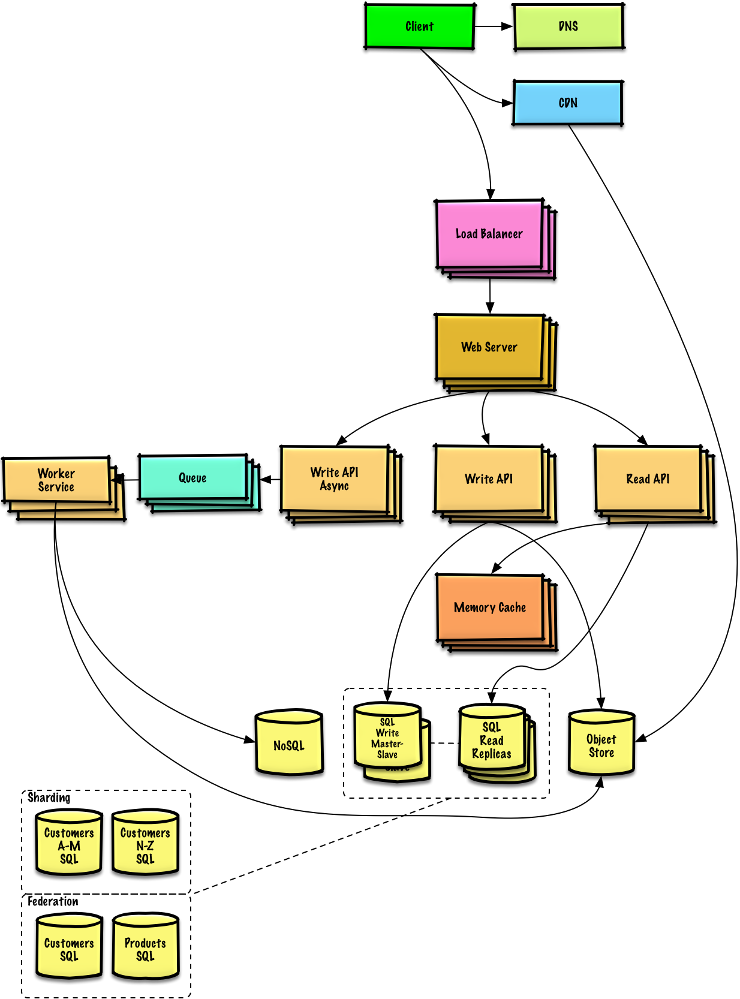

MODULE 14 · SYSTEM DESIGN SOLUTION
Solution to the exercise: "Design a system that scales to millions of users on AWS"
The other solutions in this module jump straight to "the scaled design." This one is different on purpose — it's the only exercise that walks the iterative loop itself: benchmark, profile, fix the real bottleneck, repeat. AWS specifics aren't the point; the sequence of decisions generalizes to any cloud.


With one or two users, over-engineering is the actual risk. Start with one EC2 instance running the web server and a MySQL database together, scale it vertically (a bigger box) as needed, and watch CPU/memory/IO/network to know when that stops working. Assign an Elastic IP so failover doesn't mean changing DNS, point a DNS record (Route 53) at it, and lock the box down to ports 80/443 plus whitelisted SSH on 22. Vertical scaling gets expensive fast and gives you zero redundancy — it's a starting point, not a destination.
Each stage below exists because a specific, measured bottleneck showed up in benchmarking — not because the final architecture looked good on a whiteboard. That distinction is the whole lesson of this exercise.
STAGE · USERS+

What broke: MySQL was eating more and more CPU/memory, user content was filling disk, and vertical scaling could no longer scale the web server and the database independently.
What changed: static content (user files, JS, CSS, images, video) moves to a managed Object Store like S3; MySQL moves to its own box via a managed service like RDS (multi-AZ, encrypted at rest). Also: encrypt data in transit and at rest, and put everything except the single public-facing web server inside a private VPC subnet.
STAGE · USERS++

What broke: the single web server now bottlenecks at peak hours — slow responses, occasional downtime.
What changed: add a Load Balancer (ELB or self-managed HAProxy in active-active/active-passive across zones), terminate SSL there to take that cost off the backend, run multiple web servers across availability zones, and put MySQL into master-slave failover across zones too. Separate the Web Server (reverse proxy) from the Application Server layer so each scales and deploys independently — e.g. some app servers handle reads, others handle writes. Push static (and some dynamic) content onto a CDN like CloudFront.
STAGE · USERS+++

What broke: benchmarks show the system is read-heavy (100:1) and the database is straining under read load.
What changed: move frequently-accessed MySQL content into a Memory Cache (ElastiCache/Redis) — try tuning MySQL's own query cache first before reaching for this — and move session data out of the web servers into that same cache, which makes the web servers stateless and therefore freely autoscalable (memory reads run ~250μs vs. 4x on SSD, 80x on disk, which is the whole reason this helps). Add MySQL read replicas with load balancers in front of them, and teach the web server to route reads to replicas and writes to the master.
STAGE · USERS++++

What broke: traffic spikes predictably during U.S. business hours and drops off-hours — paying for peak capacity around the clock is wasteful for a small team.
What changed: one Autoscaling group per server type, each spanning multiple availability zones, with min/max instance counts and CloudWatch-driven triggers (time-of-day, CPU, latency, network, or a custom metric). Automate the DevOps side too (Chef/Puppet/Ansible) and layer in real monitoring: host-level, aggregate/load-balancer-level, log analysis (CloudWatch/CloudTrail/Loggly/Splunk/Sumo), external uptime checks (Pingdom/New Relic), incident paging (PagerDuty), and error reporting (Sentry). The tradeoff: autoscaling adds complexity and isn't instantaneous — there's lag both scaling up and scaling down.
STAGE · USERS+++++

What broke: approaching the full constraint numbers — the database is growing too large, and both read and write volume are pushing past what caching and replicas alone can absorb.
What changed: keep only a recent window of data in MySQL and move the rest to a data warehouse (Redshift comfortably handles the 1 TB/month constraint); scale the Memory Cache further for the ~40,000 reads/sec; bring in Module 07's Federation, Sharding, Denormalization and SQL tuning for the ~400 writes/sec that's now too much for one write master; and move appropriate data to a NoSQL database (DynamoDB-class). Separate out Application Servers further, and push anything that doesn't need to happen in real time onto Queues and Workers (Module 09's asynchronism, in practice) — e.g. a photo upload returns immediately while a Worker pulls the job off an SQS-style queue, generates the thumbnail, updates the database, and stores the result in the Object Store.

This closes Module 14. Previous: Sales rank. Next: Module 15 — Object-Oriented Design Solutions.